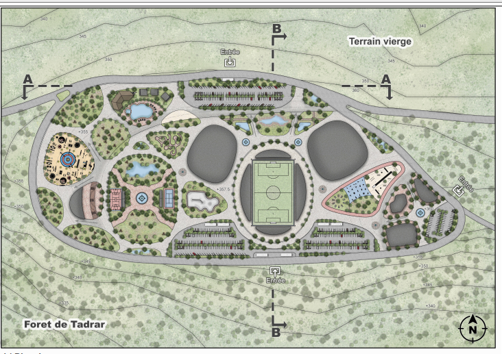

Welcome
Welcome to my architecture portfolio. This site showcases a selection of projects that reflect my approach to design, problem-solving, and spatial creativity.
Feel free to browse through the site to learn more. You can also find my contact information and CV in the Information section.
About Me
Hello! I’m Yahia Ghassan, an architect and designer passionate about creating spaces that blend functionality, emotion, and identity. My work explores how design can evoke feeling and foster connection through light, texture, and form. I believe architecture is more than just buildings; it’s about crafting experiences that resonate on a personal level. Through my projects, I strive to balance innovation with context, ensuring each design responds thoughtfully to its environment and users. Thank you for visiting my portfolio, and I hope my work inspires you as much as the process of creating it inspires me.
Featured Projects
.png)
Residential Villa Interior Design Project
Detailed architectural visualization and realistic rendering of a villa’s interior spaces, highlighting style and functionality.

Tadrar-Grarem Gouga Sports and Leisure Park
Sustainable sports park design integrating neuroarchitecture principles. Created using Revit, Enscape, and Photoshop.